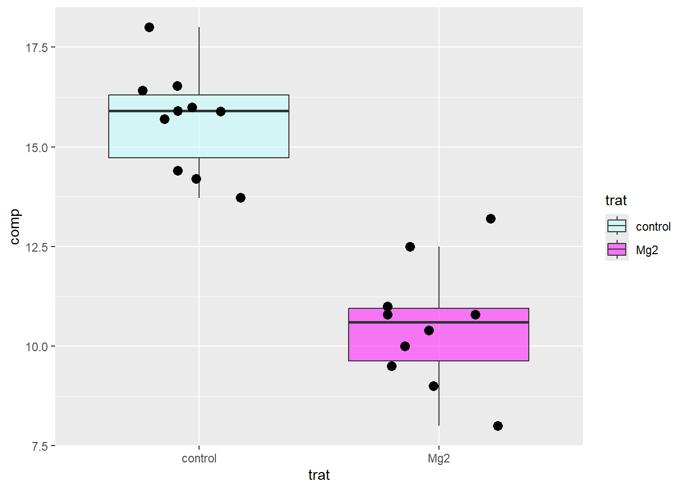
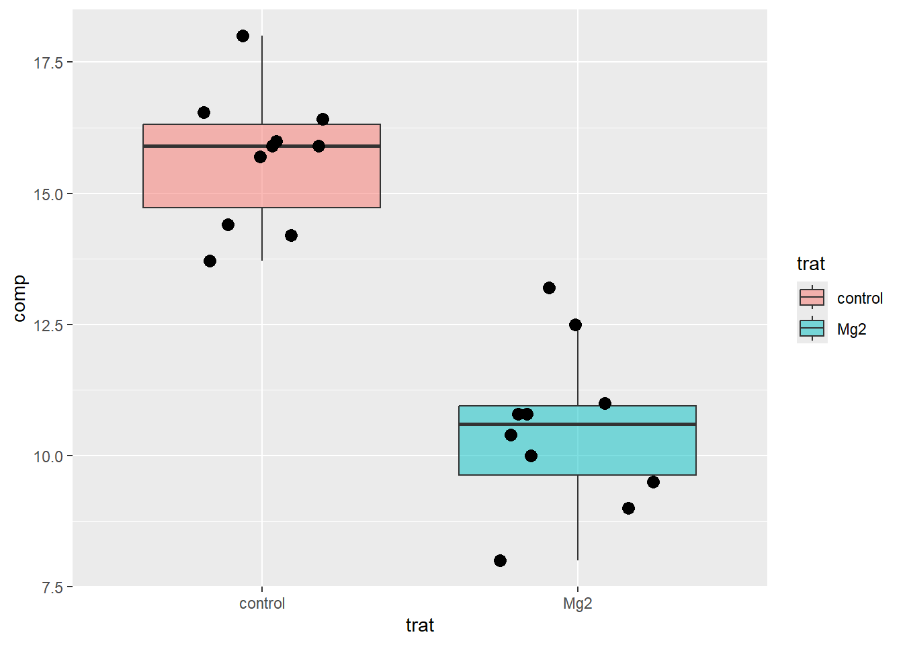
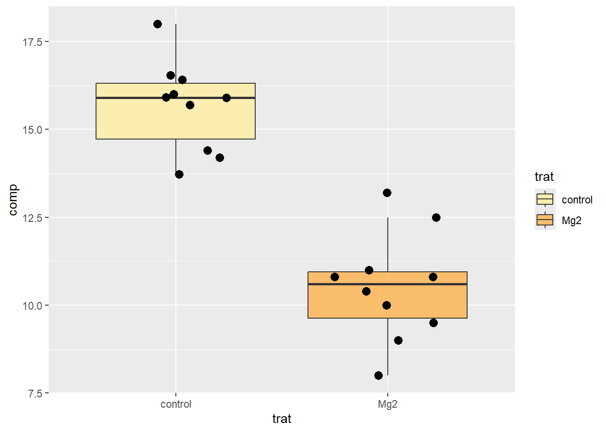
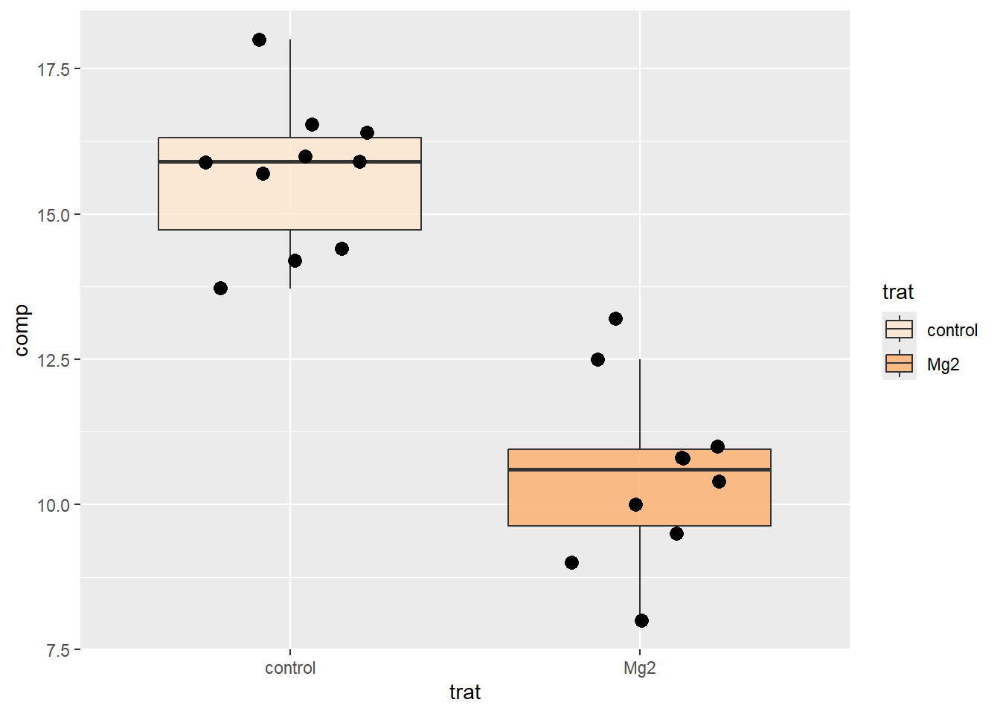
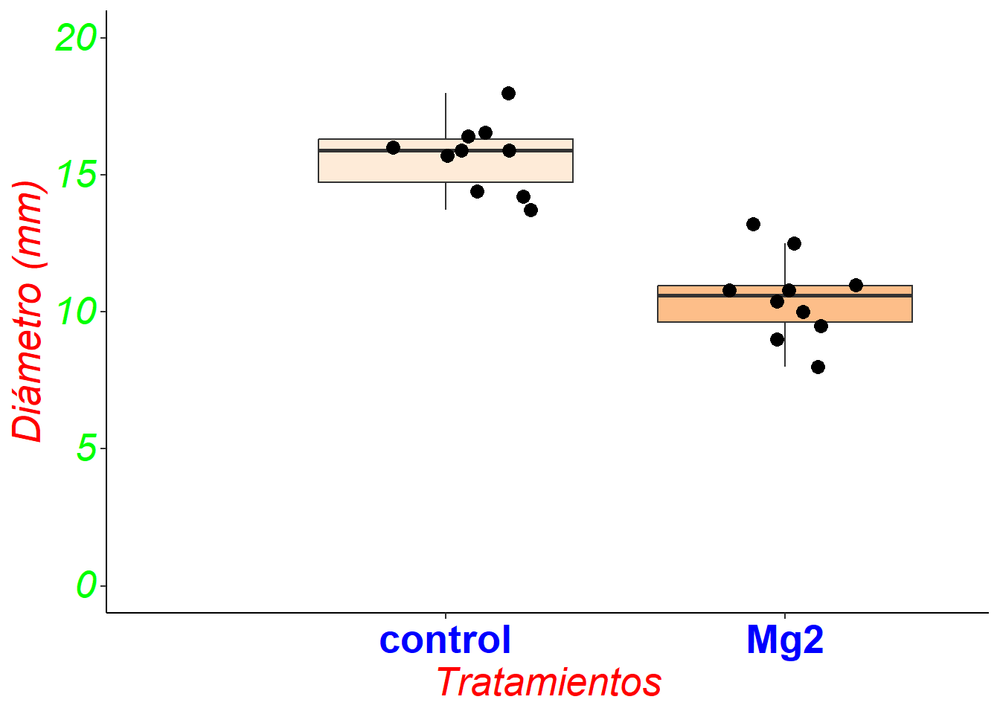

Reúne los datos necesarios en un archivo de datos (por ejemplo, CSV).
Asegúrate de que los datos estén limpios y formateados correctamente para su análisis y visualización.
Abre RStudio y crea un nueva pestaña en Quarto. Utiliza funciones como read.csv() o read_excel() para importar tus datos al entorno de RStudio. Para este ejemplo, nos apoyaremos del paquete “datapaste” y la función “tribble”.
ver código
# llamar a la librería library(tidyverse)# copiar la data y pegar utilizando addins seguido de paste as tribbledato <- tibble::tribble(~"trat", ~"rep", ~"comp","Mg2", 1L, 9,"Mg2", 2L, 12.5,"Mg2", 3L, 10,"Mg2", 4L, 8,"Mg2", 5L, 13.2,"Mg2", 6L, 11,"Mg2", 7L, 10.8,"Mg2", 8L, 9.5,"Mg2", 9L, 10.8,"Mg2", 10L, 10.4,"control", 1L, 13.72,"control", 2L, 15.91,"control", 3L, 15.7,"control", 4L, 14.2,"control", 5L, 15.9,"control", 6L, 16.54,"control", 7L, 18,"control", 8L, 14.4,"control", 9L, 16.41,"control", 10L, 16 )
2 Exploración de los datos
Antes de crear la figura, explora tus datos para comprender su estructura y distribución. Utiliza funciones como head(), summary(), y str() para obtener una visión general de tus datos.
trat rep comp
Length:20 Min. : 1.0 Min. : 8.00
Class :character 1st Qu.: 3.0 1st Qu.:10.70
Mode :character Median : 5.5 Median :13.46
Mean : 5.5 Mean :13.10
3rd Qu.: 8.0 3rd Qu.:15.90
Max. :10.0 Max. :18.00
3 Crear la figura
Para crear un boxplot se utiliza el paquete ggplot2.
|>: Esto toma el objeto dato y lo pasa como el primer argumento a la siguiente expresión.
ggplot(): Aquí se está creando un objeto de gráfico, lo que establece el mapeo estético utilizando aes(), donde trat se mapea al eje x (variable independiente) y comprimento que mapea al eje y (variable de dependiente).
geom_boxplot(): Esta función agrega una capa de diagrama de caja al gráfico, donde se muestra la distribución de una variable numérica (continua) a través de sus cuartiles.
4 Personalización de la figura
Añade etiquetas a los ejes x e y para hacer la figura más comprensible. Modifica el color, tamaño y estilo de las líneas, puntos o barras según sea necesario. Agrega títulos y leyendas para proporcionar contexto a la figura.
En tal sentido, utilizaremos los siguientes argumentos:
fill: Parámetro que define el color de relleno de las cajas y bordes.
colour: Parámetro que define el color de los bordes de las cajas.
alpha: Parámetro que define la transparencia de las cajas (0 es completamente transparente y 100 es opaco).
outlier.colour: Parámetro que define el color de los puntos que se consideran valores atípicos (por defecto, se dibujan puntos para los valores atípicos).
ver código
dato |>ggplot(aes(trat, comp)) +geom_boxplot(fill ="dodgerblue1", colour ="black",width =0.8, # ancho de la cajacoef =10, # tamaño de los bigotesalpha =1, # transparenciaoutlier.colour ="tomato2", #NAsize =2) +# bordesstat_boxplot(geom ='errorbar', width =0.25) # barrar a bigotes
Recordar que la figura es una construcción de capas, entonces voy a reordenar las funciones para mejorar la visualización.
Uno los códigos llamando a la función scale_fill_manual()
ver código
dato |>ggplot(aes(trat, comp, fill = trat)) +geom_boxplot(outlier.shape =NA, alpha =0.5) +geom_jitter(show.legend =FALSE,color ="black",size =3,width =0.25) +scale_fill_manual(values =c(control ="#BBFFFF",Mg2 ="#FF00FF"))

También se puede configurar los colores a através de la función anteriormente llamada. Por ejemplo:
ver código
dato |>ggplot(aes(trat, comp, fill = trat)) +geom_boxplot(outlier.shape =NA, alpha =0.5) +geom_jitter(show.legend =FALSE,color ="black",size =3,width =0.25) +scale_fill_hue()

Usando el paquete RColorBrewe y la función scale_fill_brewer().
ver código
dato |>ggplot(aes(trat, comp, fill = trat)) +geom_boxplot(outlier.shape =NA, alpha =0.8) +geom_jitter(show.legend =FALSE,color ="black",size =3,width =0.25) +scale_fill_brewer(palette =18) # 1-18

Usando la función scale_fill_brewer() y escala de colores: (https://jmsallan.netlify.app/blog/the-brewer-palettes/) (https://colorbrewer2.org/#type=sequential&scheme=Oranges&n=3)
ver código
dato |>ggplot(aes(trat, comp, fill = trat)) +geom_boxplot(outlier.shape =NA, alpha =0.8) +geom_jitter(show.legend =FALSE,color ="black",size =3,width =0.25) +scale_fill_brewer(palette ="Oranges") #fill, color

5 Personalizar la vista y ejes
ver código
dato |>ggplot(aes(trat, comp, fill = trat)) +geom_boxplot(outlier.shape =NA, alpha =0.8) +geom_jitter(show.legend =FALSE,color ="black",size =3,width =0.25) +scale_fill_brewer(palette ="Oranges") +theme_classic() +labs(tittle ="Investigación", x ="Tratamientos",y ="Diámetro (mm)") +expand_limits(x =0, y =0) +scale_y_continuous(limits =c(0,20),breaks =c(0,5,10,15,20)) +theme(axis.title =element_text(size =20, color ="red",face ="italic"),axis.text.x =element_text(size =20, color ="blue", hjust =0.5, vjust =1,face ="bold")) +#“plain”, “italic”, “bold” and “bold.italic”theme(axis.text.y =element_text(size =20, color ="green", hjust =1, vjust =0.4,face ="italic")) +theme(legend.position ="none")

6 Modelo de Boxplot
ver código
dato |>ggplot(aes(trat, comp, fill = trat)) +stat_boxplot(geom ="errorbar", width =0.15) +geom_boxplot(outlier.shape =NA,color ="black",size =0.5) +geom_jitter(color ="black",size =2) +theme_classic() +labs(x ="Factores",y ="Altura de planta (cm)") +scale_fill_brewer(palette ="7") +expand_limits(y =0) +scale_y_continuous(limits =c(0,23),breaks =c(0,5,10,15,20,25,30)) +theme(axis.title =element_text(size =20, color ="red")) +theme(axis.text.x =element_text(size =15, color ="blue")) +theme(axis.text.y =element_text(size =15, color ="green")) +theme(legend.position =c(0.2, 0.9),legend.background =element_rect(color ="black"),legend.text =element_text(size =15), legend.title =element_text(size =15)) +scale_fill_discrete(name ="Tratamientos")